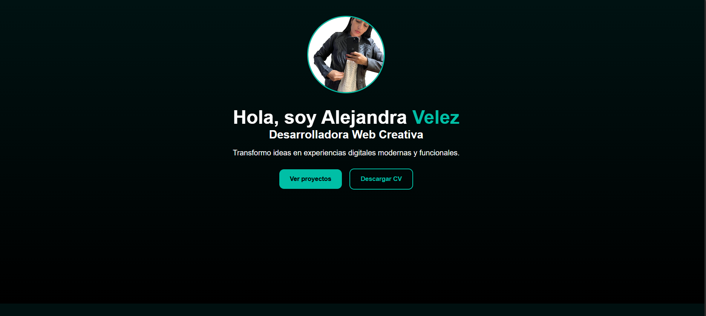

Proyectos Destacados
Estos son algunos de los trabajos y prácticas que he desarrollado durante mi formación como programadora. Cada proyecto refleja mi interés por crear soluciones funcionales, limpias y visualmente agradables.
Portafolio Personal con Vite y Node
Este proyecto fue desarrollado utilizando Vite y Node.js para crear un portafolio personal rápido, moderno y optimizado. Implementa un diseño responsivo con HTML, CSS y React, mostrando mis habilidades, servicios y proyectos de programación.

Automatización con Python
Proyecto de práctica en estructuras de control, manejo de errores y lógica básica en Python. Permite realizar operaciones aritméticas y mostrar resultados de forma clara y funcional.

Gestión de Base de Datos
Proyecto desarrollado en SQL y C++ enfocado en la gestión segura de registros de usuarios, implementando validaciones de datos, control de acceso y almacenamiento estructurado.